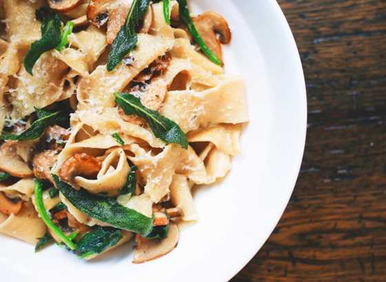
前菜の盛り合わせ
ランチでは、テリーヌやマリネ、フリッタータなどの前菜が紹介されています。
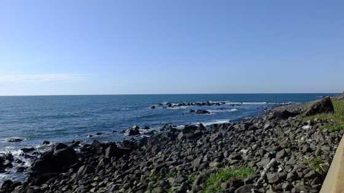
la foce — the river mouth
山と海、人と人、自然と食が出会う、小松の「河口」の食卓。
石川県小松市幸町 ／ イタリア料理
Concept
「la foce」はイタリア語で「河口」。川が海へ注ぐ場所のように、小松の山と海、そこに集う人と人が交わる店でありたい。そんな願いが、店名に込められています。
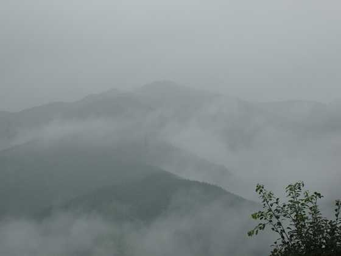
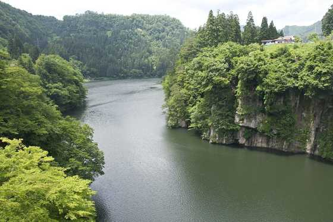

monti → fiume → foce → tavola
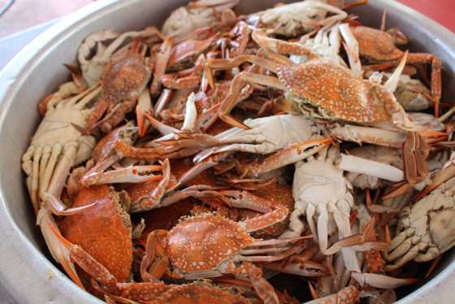
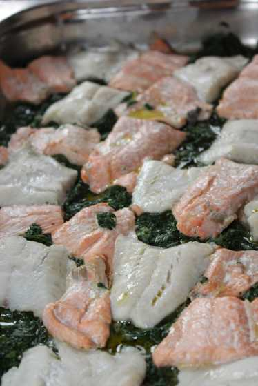
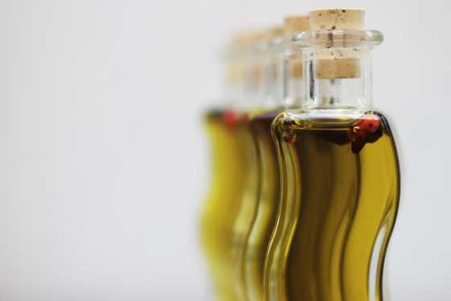

Voice
以下は、公開後の掲載イメージを示すための創作の文章です。実際のお客様の声ではありません。
能登の魚のパスタが、あっさりしているのにしっかり旨い。パンをおかわりして、ソースまできれいに食べました。
ランチで利用(イメージ)ジビエは初めてでしたが、くせがなくて驚きました。説明も気さくで、ゆっくり楽しめました。
夜のお食事で利用(イメージ)落ち着いた雰囲気なのに堅苦しくなく、友人との食事にちょうど良い店。また季節ごとに来たいです。
友人との食事(イメージ)About
店名は、シェフがイタリア・ジェノヴァで修行した町の名に由来し、その町が港町で山も近く、小松に似ていたことから選ばれたと紹介されています。
オーナーシェフは小松市出身で、ホテルアローレの元料理長。独立して、小松の風土を味わう場所をつくりました。「この場所が、小松の風土を味わい、人と人、自然と食、すべてが交わる河口となりますように」という言葉が、店の想いです。
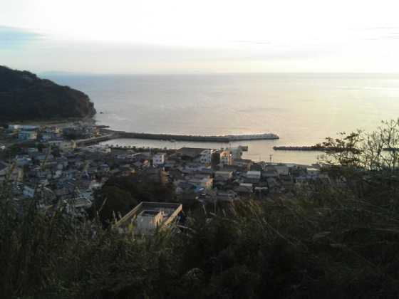
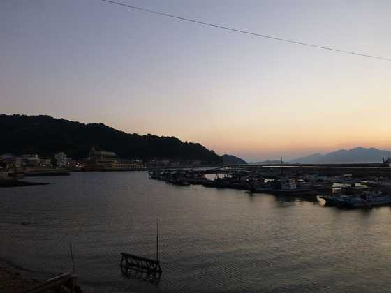
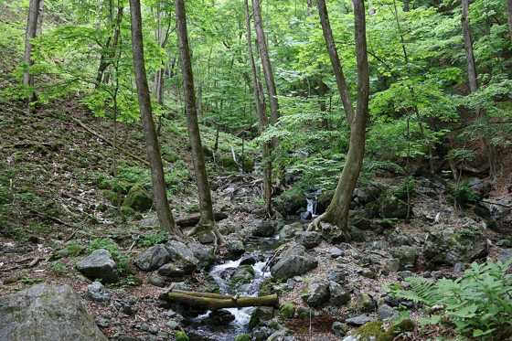
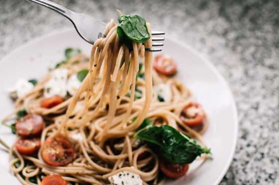
Access
| 店名 | la foce(ラ・フォーチェ) |
|---|---|
| 住所 | 石川県小松市幸町1丁目33-2 スタチオネ 1F-2 |
| 電話 | 準備中 |
| 営業時間 | 準備中 |
| 定休日 | 準備中 |
このページの写真はすべてフリー素材(クリエイティブ・コモンズ等)のイメージで、店舗の実際の様子・お料理ではありません。口コミもイメージ例です。
出典の詳細は制作側の記録(_notes/photo_credits.md)にまとめています。